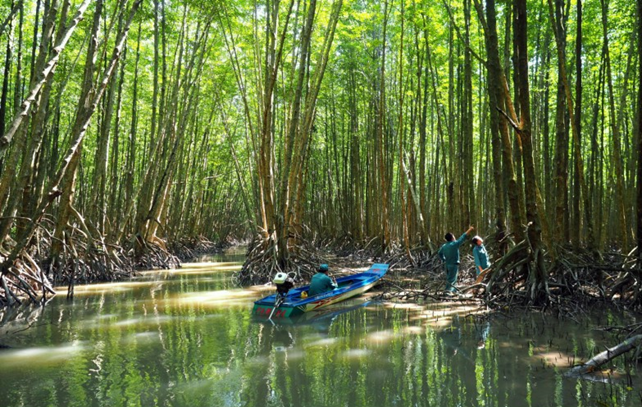
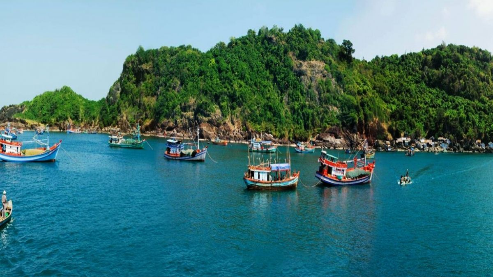
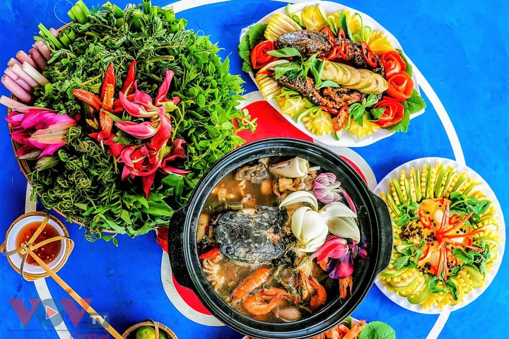
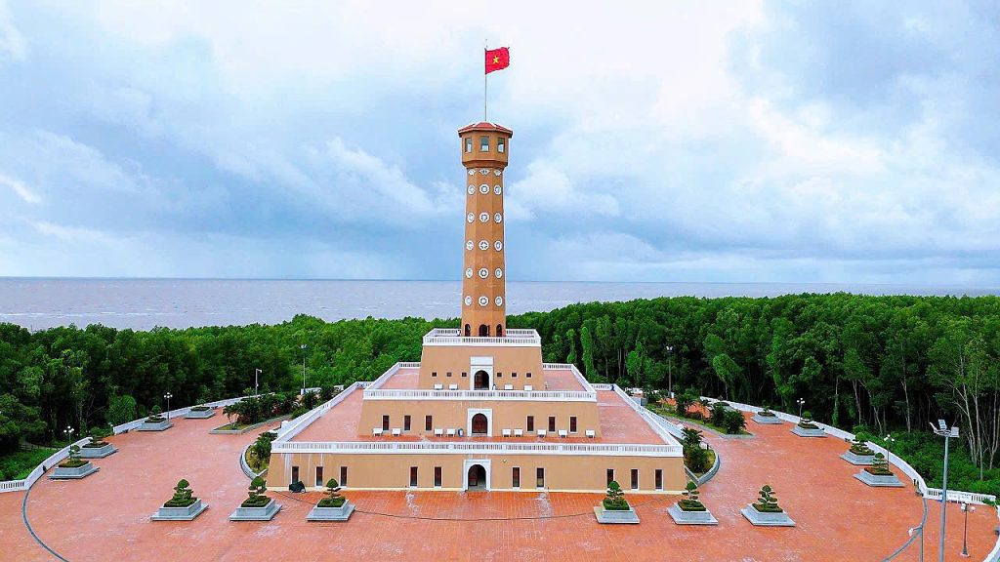
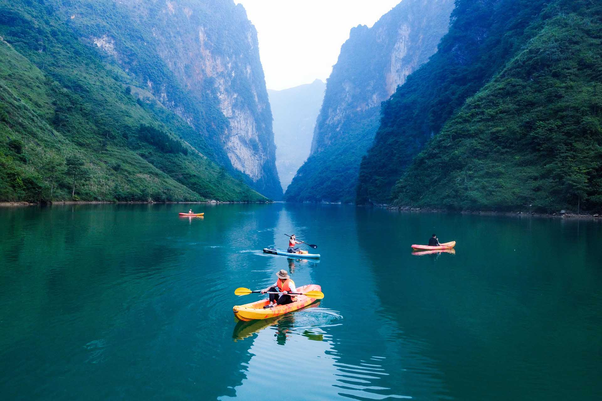
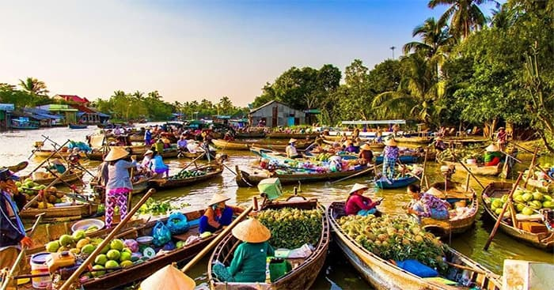

Du khách nên ghé Vườn Quốc gia U Minh Hạ để trải nghiệm rừng ngập mặn, tham quan hệ sinh thái phong phú và chiêm ngưỡng các loài chim, cá quý hiếm.
Các tour du thuyền trên sông, tham quan chợ nổi và các làng nghề truyền thống giúp bạn trải nghiệm đời sống sông nước đặc trưng miền Tây.
Mũi Cà Mau – điểm tận cùng đất nước – là địa điểm nổi bật để ngắm bình minh, hoàng hôn và cảnh quan rừng ngập mặn rộng lớn.
Ẩm thực Cà Mau nổi bật với hải sản tươi sống, đặc biệt là cua, ghẹ, cá đồng và các món ăn dân dã miền sông nước.
Cà Mau có lịch sử lâu đời gắn liền với khai phá vùng đất phương Nam, đời sống dân cư gắn bó mật thiết với sông nước.
Các lễ hội truyền thống và phong tục địa phương, như lễ cúng ông Nam Hải và lễ hội chợ nổi, vẫn được duy trì lâu đời.
Văn hóa dân gian miền Tây thể hiện qua nghề đánh bắt, trồng lúa, và các sản phẩm thủ công truyền thống.
Sự kết hợp giữa truyền thống và thiên nhiên tạo nên nét đặc trưng riêng cho vùng đất này.
Cà Mau nổi bật với rừng ngập mặn rộng lớn, sông rạch chằng chịt và các kênh rạch uốn lượn, tạo nên cảnh quan đặc trưng miền Tây.
Vùng đất này còn có các đảo nhỏ, bãi bồi và hệ sinh thái phong phú, thu hút nhiều loài chim, cá và thủy sinh.
Bình minh và hoàng hôn trên rừng ngập mặn hoặc sông nước mang đến khung cảnh yên bình, thư giãn cho du khách.
Cảnh quan hoang sơ, ít bị đô thị hóa giúp du khách tận hưởng sự gần gũi với thiên nhiên.
Cà Mau có khí hậu nhiệt đới gió mùa, mùa khô từ tháng 12 đến tháng 4 là thời điểm thuận lợi để du lịch.
Người dân thân thiện, hiền hòa và sống gắn bó với nghề biển, nông nghiệp và đời sống sông nước.
Sự mến khách kết hợp với thiên nhiên hoang sơ tạo nên trải nghiệm du lịch đáng nhớ cho du khách.





